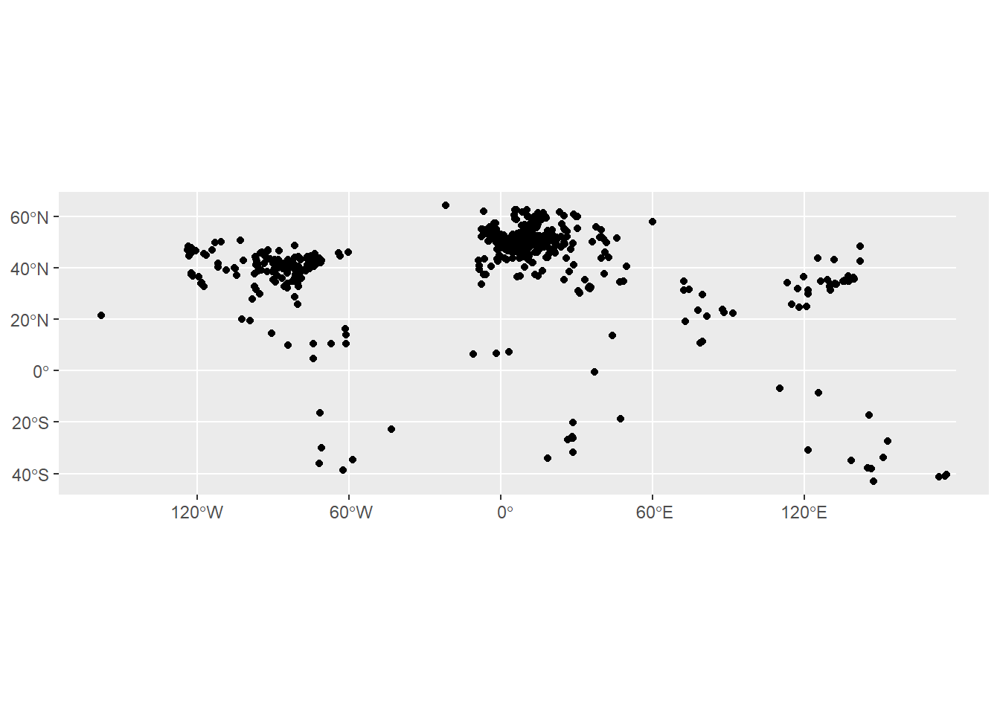
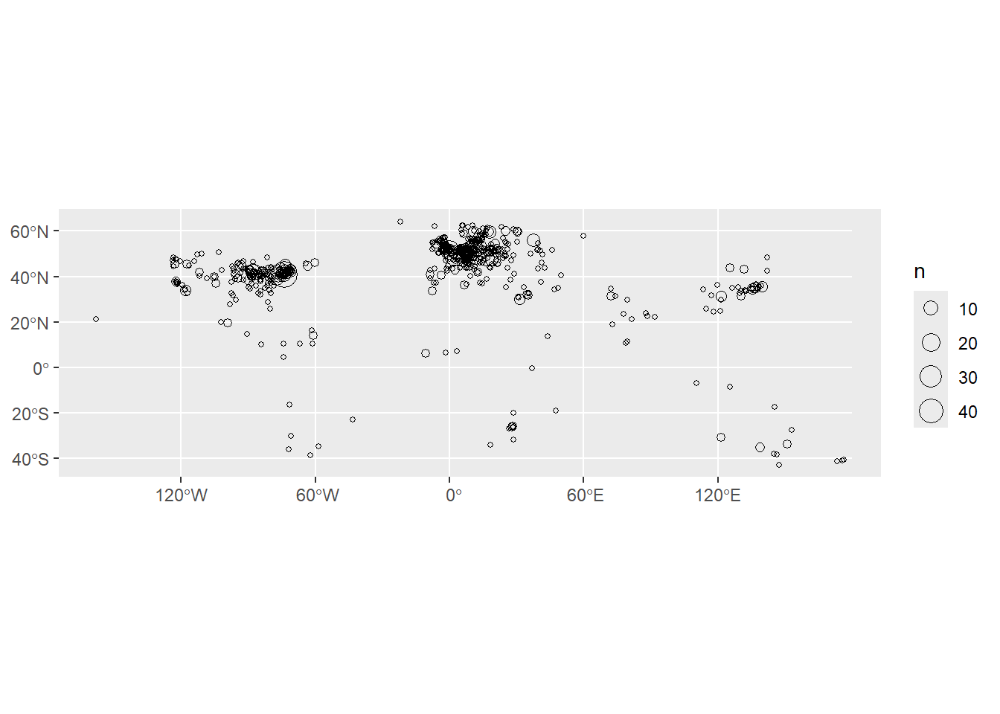
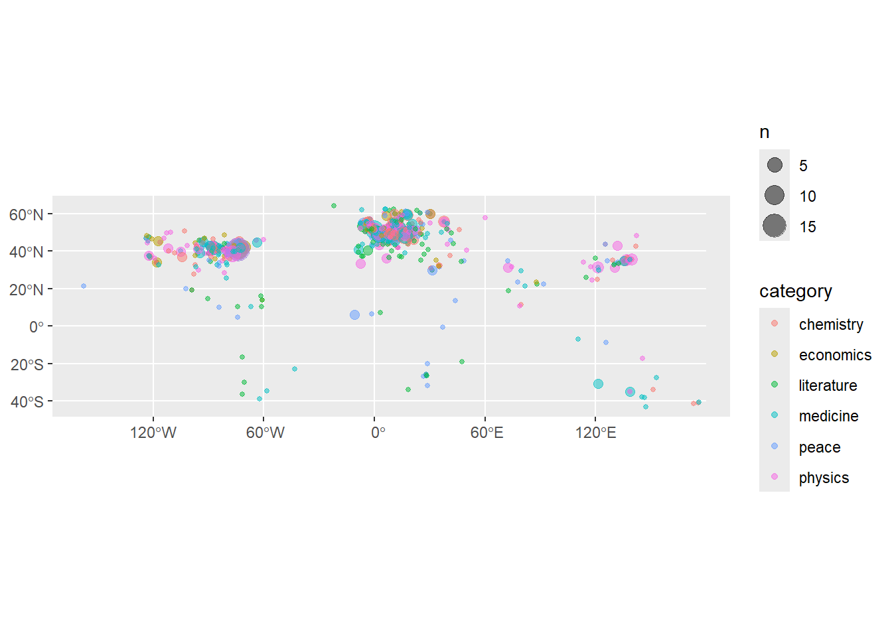
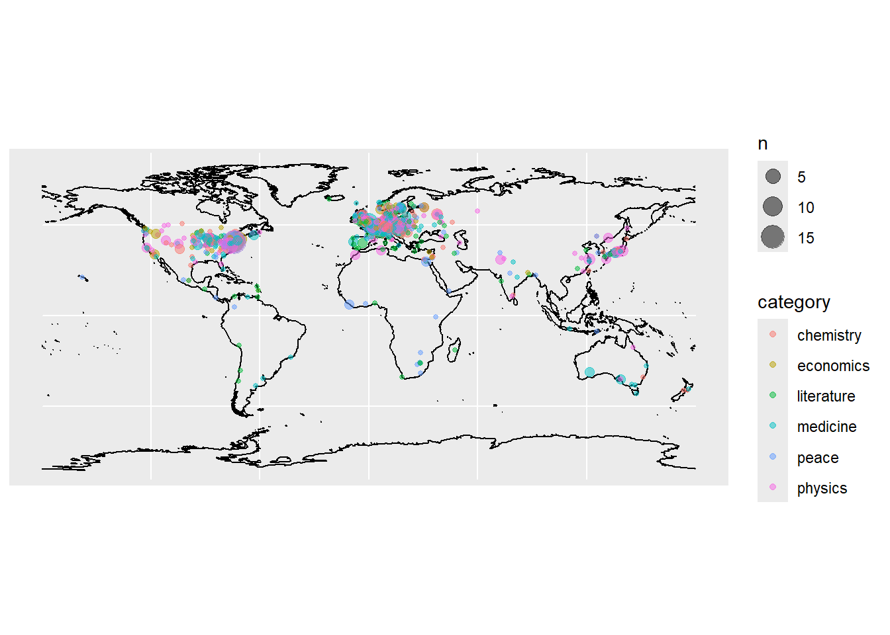
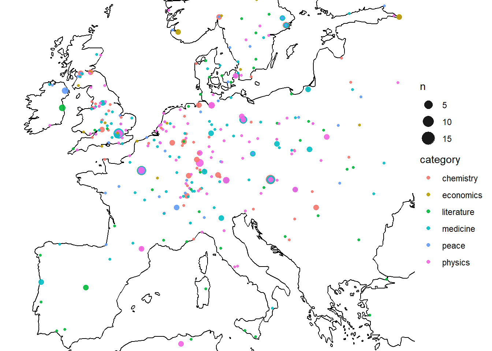
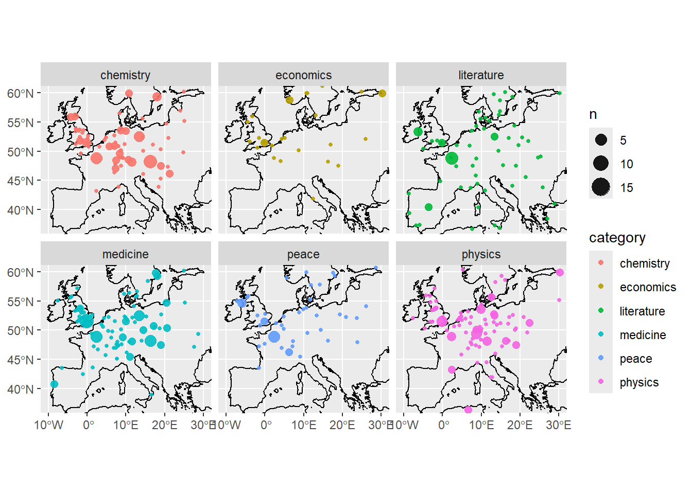

library(dplyr)
library(sf)
library(readr)
library(ggplot2)
nobel_laureates = read_csv('nobel-prize-winners.csv')47 Creating your own geographic objects
Making points maps in R
Last week we made maps of shaded polygons called thematic maps or choropleth maps. Another common visual data map are points maps: that is, a map where geographic data is visualised as individual points, often sized and coloured according to further variables. These are useful when your data are at the level of individual addresses or cities, rather than countries.
To make a map like this, you need to create a geographic object from a set of coordinates within a dataset. Often, you’ll want to summarise the data first of all, if you have multiple observations (rows of information) about the same place.
To begin with, you’ll need a dataset with latitude and longitude coordinates. These may already be in your dataset, or you may need to find and add them yourself (see the next page on some methods for this).
If you do have coordinates in a dataset, they are often included in a single column. You can use the function separate() to split them into two.
Making a simple features object
Once you have your coordinates, you’ll need to make your own simple features object from this dataset. If you remember from last week, a simple features object is a special geographic object, which can be created and edited using the R package sf. The maps we downloaded from RNaturalEarth were in this format.
Let’s start with the dataset of Nobel prize winners from last week, this time with longitude and latitude points for each place of birth and death, making it quite easy to turn into a map.
In order to turn this into a simple features object, we use a function from the sf package called st_as_sf(). In this function, we will need to specify three things: the dataset of coordinates, the columns containing those coordinates, and the Coordinate Reference System (CRS). Recall from last week that the CRS specifies how distances should be calculated, and which projection should be used.
First, let’s load the dataset and the libraries we need to use.
Create the sf object using the following code:
nobel_laureates_sf = st_as_sf(nobel_laureates |>
filter(!is.na(bornLong)),
coords = c('bornLong','bornLat' ),
crs = 4326,na.fail = FALSE)The argument coords = needs the names of the longitude and latitude columns, in the correct order. They should be given in a vector (surrounded by c(). Next we specify the Coordinate Reference System using crs =. We’ll use the CRS 4326, which is a very widely used one. Last, we need to specify that it should ignore missing values, with the code na.fail =FALSE. Otherwise, it would give an error if we have any missing coordinates.
Map with ggplot and geom_sf
Turning this into a basic map is very simple, and follows the syntax from previous weeks, using geom_sf.
ggplot() +
geom_sf(data = nobel_laureates_sf)
This map obviously needs some work to make it readable. Most likely, it’ll need a background map of the world to help with orientation. This is done by simply downloading a base map using RNaturalEarth, and adding it as a layer to the code above (add it before the points data so it doesn’t draw on top of it). We may also want to adjust the limits of the coordinates using coord_sf().
Aggregating the points data
A slightly more fundamental problem in this case is that it’s not a very accurate visual representation of the data. This is because each place is simply drawn as a point. If there are multiple instances of the same set of coordinates, these will be drawn on top of each other and will disappear.
In most cases, we’ll want to aggregate the points information somehow. This is done using group_by() and tally() or summarise().
summarised_data = nobel_laureates_sf |>
group_by(bornCity_now) |> summarise(n = n())Again, this can be turned into a map using ggplot and geom_sf(), this time setting the size to the calculated column, which is called n. This needs to be done within aes().
ggplot() +
geom_sf(data = summarised_data |> filter(!is.na(n)), aes(size = n), shape = 21, show.legend = "point")
Adding further variables
Another thing we might want to do is to visualise the dots by some additional variable, for example the category of Nobel prize. We make a simple dataset, but add the category variable in to the group_by() function.
summarised_data = nobel_laureates_sf |> group_by(bornCity_now, category) |> summarise(n = n())We can specify the color using color = within the aes(), as with size. However, we will also run into the problem of points being invisible because others are drawn on top of them. One trick to fix this is to set the transparency of the points to a value lower than one, using alpha =. In this case, alpha = should not go within the aes(), because we want to set all points to a single value.
show.legend = "point" is necessary to tell ggplot how it should draw the legend, for some technical reason (because it’s not exactly a point but a geographic object, so it works slightly differently).
ggplot() +
geom_sf(data = summarised_data, aes(size = n, color = category), alpha = .5, show.legend = "point")
Adding a basemap.
In most cases with a points map, you’ll want to add a basemap layer to your data, so that viewers understand which points correspond to which geographic places. A basemap is added by adding a layer to your map containing a shapefile corresponding to your area.
For example, to add a basemap of the world to your map, you can download one using R Natural Earth, as we did last week:
library(rnaturalearth)Warning: package 'rnaturalearth' was built under R version 4.5.1worldmap_coast = ne_coastline(scale = 'medium', returnclass = 'sf' )To add to your map, simply add it as a separate layer, before your data layer:
ggplot() +
geom_sf(data = worldmap_coast) +
geom_sf(data = summarised_data, aes(size = n, color = category), alpha = .5, show.legend = "point")
‘Zooming in’ on your map
The easiest way to do this is to adjust the coordinates using coord_sf():
ggplot() +
geom_sf(data = worldmap_coast) +
geom_sf(data = summarised_data, aes(size = n, color = category), alpha = .9, show.legend = "point")+
coord_sf(xlim = c(-10, 30), ylim = c(37, 60)) + theme_void()
Faceting
One way to display more variables in your visualisations is to make use of faceting. Faceting will create a separate visualisation for each combination of categories you specify. This is not restricted to maps but can be done with all visualisation types.
ggplot() +
geom_sf(data = worldmap_coast) +
geom_sf(data = summarised_data, aes(size = n, color = category), alpha = .9, show.legend = "point")+
coord_sf(xlim = c(-10, 30), ylim = c(37, 60)) + facet_wrap(~category)
In-class exercise 1:
Make a points map using the ‘extinct languages’ dataset in Posit.
Add a basemap using RNaturalEarth
Restrict the map to a chosen area
Colour the data by the endangered status.
In class exercise 2:
The following is a good example of the kind of real-world workflow in making a map from external data, including the kinds of problems with matching and cleaning you’ll often encounter.
Using the eurosat database, choose a dataset to visualise. You want to choose something from Detailed datasets -> General and Regional Statistics -> Regional statistics by NUTS classification (reg), as in the screenshot here:

Download a shapefile of the NUTS regions from the official EU site. Choose the least-detailed scale so you don’t run into computer memory problems. Select the ESPG: 4326 CRS.
Upload these files to Posit cloud (or keep on your local machine if you’re running R there).
Make a map. Start by selecting a single year and shading each region by the colour of your dataset.
See how far you can get with the following:
Use a fill colour palette which more easily distinguishes the lower and higher values.
Use theming to remove unwanted elements of the map.
Adjust the coordinate limits to focus on the main region of Europe, ignoring the Atlantic islands.
The map looks a little strange with missing regions and countries (i.e the UK). How could we solve this, so they are at least present, but perhaps grayed out?
Try this extra challenge: make a version which creates a series of mini-maps, one for each year in the data. To do this you’ll need to
pivotyour data so that it is in a ‘long’ format, with each data point for each year in a single row, and use a function calledfacet_wrap().